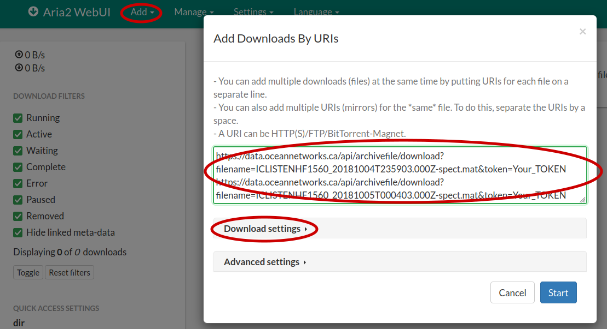

Download Archived Files
# Get the token from your Oceans 3.0 profile page
from onc import ONC
onc = ONC("YOUR_TOKEN")
/archivefile/device
Get a list of all archived files available from a specific device for a specific time-range
Return the archived files for a device with deviceCode “RDIADCP600WH25471”
params = {
"deviceCode": "RDIADCP600WH25471",
"dateFrom": "2019-06-07T00:00:00.000Z",
"dateTo": "2019-06-08T00:00:00.000Z",
}
onc.getArchivefile(params)
# Longer method name
# onc.getArchivefileByDevice(params)
# Alias method name
# onc.getListByDevice(params)
Get a list of all archived files available from a specific device for a specific time-range with a specific extension
Return the archived files for an ADCP instrument with deviceCode “RDIADCP600WH25471” that have rdi as the extension name.
params = {
"deviceCode": "RDIADCP600WH25471",
"extension": "rdi",
"dateFrom": "2019-06-07T00:00:00.000Z",
"dateTo": "2019-06-08T00:00:00.000Z",
}
onc.getArchivefile(params)
# Longer method name
# onc.getArchivefileByDevice(params)
# Alias method name
# onc.getListByDevice(params)
Download a file by its filename
onc.downloadArchivefile("ICLISTENHF1560_20181005T000403.000Z-spect.mat", overwrite=True)
# Alias method name
# onc.getFile("ICLISTENHF1560_20181005T000403.000Z-spect.mat", overwrite=True)
/archivefile/location
Get a list of all archived files available from a specific location and a device category for a specific time-range
Return the archived files for a device with deviceCategoryCode “HYDROPHONE” at location Straight of Georgia East ( locationCode:”SEVIP”)
params = {
"deviceCategoryCode": "HYDROPHONE",
"locationCode": "SEVIP",
"dateFrom": "2018-10-05T00:05:00.000Z",
"dateTo": "2018-10-05T00:06:00.000Z",
}
onc.getArchivefile(params)
# Longer method name
# onc.getArchivefileByLocation(params)
# Alias method name
# onc.getListByLocation(params)
Get a list of all archived files available from a specific location and a device category for a specific time-range with a specific file extension
Return the archived files for a device with deviceCategoryCode “HYDROPHONE” at location Straight of Georgia East ( locationCode:”SEVIP”) with file extension “mat”.
params = {
"deviceCategoryCode": "HYDROPHONE",
"locationCode": "SEVIP",
"extension": "mat",
"dateFrom": "2018-10-05T00:05:00.000Z",
"dateTo": "2018-10-05T00:06:00.000Z",
}
onc.getArchivefile(params)
# Longer method name
# onc.getArchivefileByLocation(params)
# Alias method name
# onc.getListByLocation(params)
Download archived files that match the parameters
Download all “mat” files from a hydrophone at Straight of Georgia East (locationCode:”SEVIP”).
params = {
"deviceCategoryCode": "HYDROPHONE",
"locationCode": "SEVIP",
"extension": "mat",
"dateFrom": "2018-10-05T00:05:00.000Z",
"dateTo": "2018-10-05T00:06:00.000Z",
}
onc.downloadDirectArchivefile(params)
# Alias method name
# onc.getDirectFiles(params)
Download archived files using a download manager
Return the download URLs from a hydrophone at Straight of Georgia East (locationCode:”SEVIP”).
params = {
"deviceCategoryCode": "HYDROPHONE",
"locationCode": "SEVIP",
"extension": "mat",
"dateFrom": "2018-10-05T00:00:00.000Z",
"dateTo": "2018-10-05T00:10:00.000Z",
}
# print is necessary to render the newline character
print(onc.getArchivefileUrls(params, joinedWithNewline=True))
After running the code, a list of URLs will be printed.
https://data.oceannetworks.ca/api/archivefile/download?filename=ICLISTENHF1560_20181004T235903.000Z-spect.mat&token=Your_TOKEN
https://data.oceannetworks.ca/api/archivefile/download?filename=ICLISTENHF1560_20181005T000403.000Z-spect.mat&token=Your_TOKEN
https://data.oceannetworks.ca/api/archivefile/download?filename=ICLISTENHF1560_20181005T000903.000Z-spect.mat&token=Your_TOKEN
At this point, you can open your favorite download manager, paste the URLs, and start the download. Most modern download managers support batch download, probably from a multi-line text input, the clipboard or a file.
Here is an example of using a popular open source download manager – aria2.
webui-aria2
aria2 is a lightweight multi-protocol & multi-source command-line download utility. webui-aria2 is a web interface to interact with aria2. Refer to the webui-aria2 README file for more information on how to use the tool.
Install aria2 by downloading it from the release (or use your package manager if you are on Linux), extract the zip file, and start the server by running
./aria2c --enable-rpc --rpc-listen-all
Go to https://ziahamza.github.io/webui-aria2 (or you can download this repository and open index.html from docs folder), change “Enter the host” field to “localhost” in the setting, and save the settings. Sometimes you need to also refresh the page.

Click “Add” -> “By URIs” in the menu. Fill in the URLs and start the download. You can also customize the download in the “Download settings” like changing the download directory. 